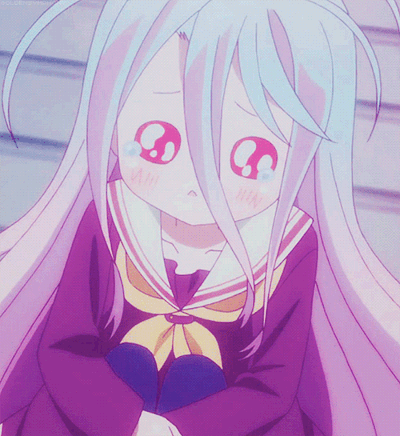

Ne faites pas comme saki-Bakaa
EP Tristes Histoires

Prochainement quand j'aurais pas la flemme de faire l'amv...
Elle avait peur des gens
Nan Peur d'être mal acceptée
Elle avait l'âme brillante
Mais depuis peu s'enferme
Personne peut la sortir de l'enfer
J'me sens impuissant mais je peux rien faire
Saki pensait bien faire en acceptant son sort
Elle aimait bien sa mère paraissait en forme
Elle crie encore quelle ne sait pas quoi faire
La vie lui fait du mal et voudrait y mettre un terme
Puis lors d'une sortie avec des soit disant amis
Elle souriait enfin, avait mis ses plus beaux habits
Mais ce monstre l'a accosté
C'est à ce moment là que tout a dérapé
Mais c'est quoi ce sentiment qui m'accable
Oe Plus il la charme plus elle trouve ça agréable
Ça faisait si longtemps qu'elle l'a gravée dans sa mémoire
Une illusion l'achevant mais qu'elle seule
Voulait accroire
Pré refrain
Je t'en pris ne sombre pas,
J'ten pris arrête de le faire
Tu réfléchis plus tu baves et ça
C'est parce que la drogue commence à faire effet,
Cette crevure t'as peut être dis que
T'étais loin d'être ordinaire
Mais cette salo** de monstre
S'amusera à te faire tout perdre
Refrain :
Seringue dans sa chair,
Elle a battu le record
Elle a quitté la noosphère,
Il joue avec son corps
S'amuse avec ses formes
Ces putains de monstres la transforment
Elle n'était qu'une petite écolière
Et se retrouve dans de sales affaires
Elle est tombée en enfer,
Elle qui voulait plaire
Les drogues ont pris son âme
Et puis le sexe l'endort
Et encore elle se tord,
Son âme elle lui avait offert
C'est comme si quelqu'un avait arraché
Son coeur de son corps
Couplet 2
Quand c'est pas un, c'est l'autre qui vient,
Tu ressens plus rien ,tu t'sens si bien
Réfléchis pas ,tu deviens folle
et viens une nouvelle fois d'le faire
Tu réfléchis mais tu penses que
La seule solution s'est se taire
Il t'écoute plus même si tu lui a interdis d'le faire
Elle a des tatouages,
Des cicatrices et des piercings tordus
Tu dévalorisais ton corps pourtant il te traite de put*
Coeur dans les yeux,
T'as l'air heureuse qu'alors que
T'aimerais qu'on te console
Des larmes coulent le long de tes yeux
Et tu t'sentais toujours seule
Il te dis qu'il t'aime c'mensonge te fais plaisir
Mais sur le long terme il kiffera te faire souffrir
Et quand ses pansements s'arracheront de sa chair
Il sera trop tard pour récuperer
Ce que tu viens de perdre
Elle a croisé personne
Attend que son heure sonne
Elle était jeune ,elle était frêle
mais maintenant consomme
Elle voulait l'faire, et devenir mère
Mais l'overdose la fait définitivement taire !
Refrain :
Seringue dans sa chair,
Elle a battu le record
Elle a quitté la noosphère,
Il joue avec son corps
S'amuse avec ses formes
Ces putains de monstres la transforment
Elle n'était qu'une petite écolière
Et se retrouve dans de sales affaires
Elle est tombée en enfer,
Elle qui voulait plaire
Les drogues ont pris son âme
Et puis le sexe l'endort
Et encore elle se tord,
Son âme elle lui avait offert
C'est comme si quelqu'un avait arraché
Son coeur de son corps
Seringue dans sa chair ,elle a battu le record
Elle a quitté la noosphere, il joue avec son corps
S'amuse avec ses formes
Ces putains de monstre la transforment
Elle n'était qu'une petite écolière
et se retrouve dans une sale affaire
L'angoisse l'emporte sur la peur
Proche des portes des enfers
Avance jusqu'à ce qu'elles se referment
Dans se dédale elle s'enferme
Elle vécue un enfer
Dernière seringue dans son corps
pour s'éloigner d'la misère
Fin
Plus besoin de pleurer vu que la douleur est partie
Du moins elle n'y arrive plus car son âme s'est perdue
Alors ne faites pas comme saki nan